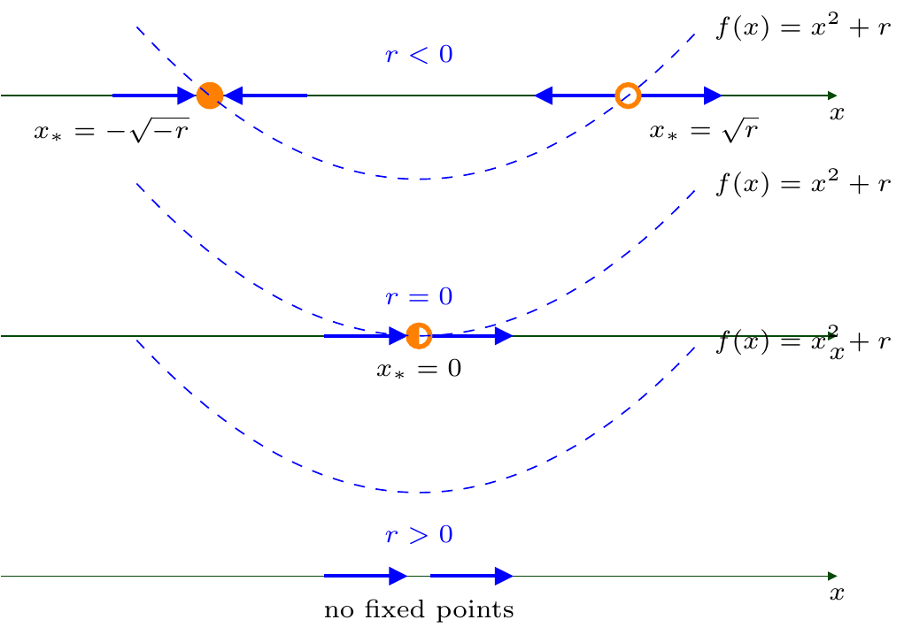
4 Bifurcations
4.1 Meaning
Recall that solutions of one-dimensional dynamical systems may either converge (as time tends to infinity) to stable fixed points (a.k.a. equilibrium or attractor) or converge to \(\infty\) (as time tends to a finite or infinite limit).
They also depend on various parameters that makes the analysis interesting and non-trivial.
Important are the critical values of parameters, so that the dynamical system demonstrates different qualitative behaviours for parameters smaller and larger than the values.
4.2 Definition
Consider a dynamical system \(x'=f(x)\), where \(f(x)\) is a smooth function of a parameter \(r\in{\mathbb{R}}\), i.e. we assume that \(f(x)=f(x,r)\). Bifurcation is the phenomenon when the dynamical system demonstrates different phase portraits when \(r\) changes its values from \(r<r_{\mathrm{cr}}\) to \(r>r_{\mathrm{cr}}\) for some critical value \(r_{\mathrm{cr}}\) called the bifurcation point.
4.3 Definition: Saddle-node bifurcation
For a dynamical system \(x'=f(x,r)\), a (local) saddle-node bifurcation takes place for a critical value of the parameter \(r=r_{\mathrm{cr}}\) if, for values of \(r\) from one side of \(r_{\mathrm{cr}}\) there are not fixed points, whereas as soon as \(r\) takes values from the other side of \(r_{\mathrm{cr}}\) there appear two fixed points. Thus one could said that two fixed points collide (when \(r\to r_{\mathrm{cr}}\), from one side) and disappear (annihilate).
4.4 Example
Consider \(x'=x^2+r\). Then
for \(r>0\), the equation \(x^2+r=0\) has not (real) roots, i.e. there are no fixed points. Note also that then \(x'>0\) i.e. \(x(t)\) increases for all \(t\) (it will be on a finite time interval, similarly to Example 3.7);
for \(r<0\), the equation \(x^2+r=0\) has two fixed points: \(x=\pm\sqrt{-r}\). As it was in Example 3.7, one can show that \(x=-\sqrt{-r}\) is stable and \(x=\sqrt{-r}\) is unstable. The same can be also shown using the linear stability analysis: \(f(x)=x^2+r\), then \[ f'(x)=2x, \quad f'(\pm\sqrt{-r})=\pm2\sqrt{-r} \] and hence we get the same statement;
also we note that for \(r=0\), there is a unique fixed point, \(x^2=0\) yields \(x=0\), but since \(x^2>0\) for all \(x\neq0\) we conclude that \(f(x)\) does not change its sign, and hence this fixed point is neither stable nor unstable, it is a half-stable fixed point.
The phase portraits changes accordingly when \(r\) changes its values from \(r<r_{\mathrm{cr}}=0\) to \(r>r_{\mathrm{cr}}\):
4.5 Remark
The same saddle-node biffurcation takes place for \(x'=x^2-r\), just the “order” of the phase portraits will be opposite.
4.6 Bifurcation diagram
Recall that a phase portrate shows how the solution \(x=x(t)\) behaves with time (increasing or decreasing) in certain intervals of values of that \(x\). In the case of bifurcation for a dynamical system \(x'=f(x,r)\), the behaviour of \(x\) depends on \(r\). The diagram which shows the dependence of \(x\) on \(r\) is called the bifurcation diagram.
4.7 Example
In Example 4.4, we have shown that, for \(r\geq0\), \(x=x(t)\) increases; whereas for \(r<0\), we got that \(x=x(t)\) increases when \(x>\sqrt{-r}\) and also when \(x<-\sqrt{-r}\), and we got that \(x=x(t)\) decreases when \(-\sqrt{-r}<x<\sqrt{-r}\). We have then the bifurcation diagram:
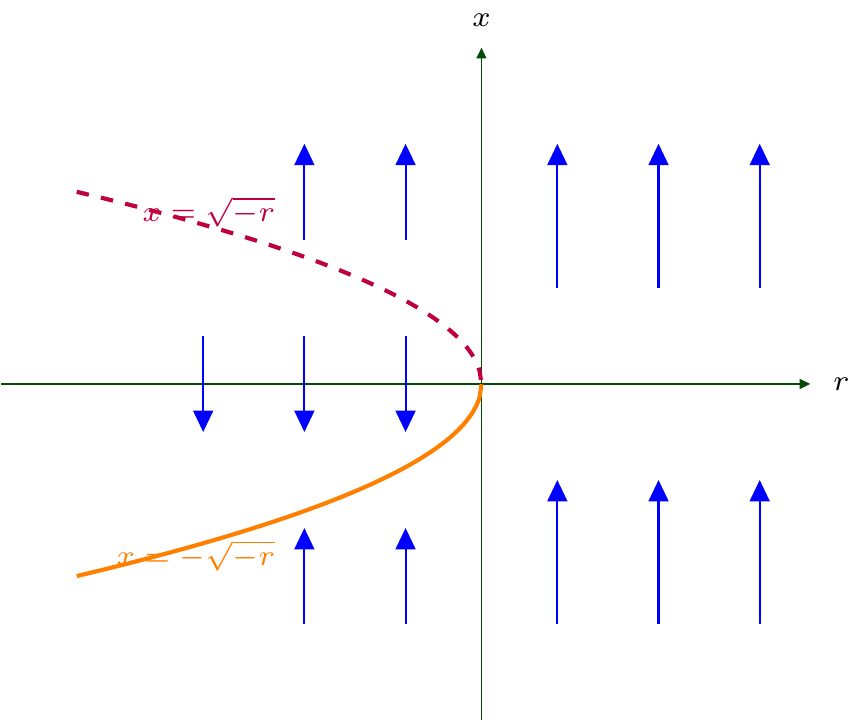
The dashed curve consists of unstable fixed points and the solid curve consists of stable fixed points.
4.8 Remark
If one fixes some \(r_\circ\in{\mathbb{R}}\) and consider the corresponding vertical line \(r=r_\circ\) on the bifurcation diagram, we will get the phase portrait for \(x'=f(x,r_\circ)\) placed vertically.
4.9 Example
Consider the dynamical system
\[ {x'=r-x-e^{-x}}, \qquad r\in{\mathbb{R}}. \tag{4.1}\]
This example generalises Example 3.29 (where \(r=2\)). We will use again graphical arguments by exploring the graphs of \(y=e^{-x}\) and \(y=r-x\). All (straight) lines \(y=r-x\) for \(r\in{\mathbb{R}}\) are parallel. For \(r\) big enough, we will have two points of intersection, the smaller is unstable, the larger is stable (by the same arguments as it was done in Example 3.29).
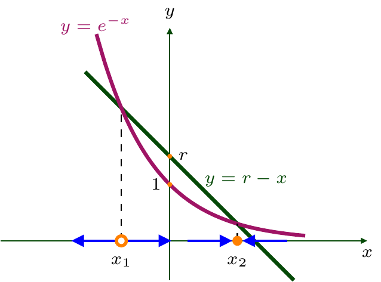
Next, for some critical value \(r=r_{\mathrm{cr}}\), the line \(y=r-x\) is the tangent line to the curve \(y=e^{-x}\) and hence there is only one fixed point to (4.1). The tangent line to \(y=e^{-x}\) at a point \(x_*\) has the gradient \[ y'(x_*)=-e^{-x_*}, \] whereas the gradient of the line \(y=r-x\) is \(-1\). Hence, to have it tangent, one needs \(-e^{-x_*}=-1\), i.e. \(x_*=0\). Therefore, the (tangent) line passess through \((0,e^{-0}=1)\). Since the line is \(y=r_{\mathrm{cr}}-x\) and \(y(0)=1\), we conclude that \(r_{\mathrm{cr}}=1\).
Finally, for \(r<r_{\mathrm{cr}}\), the line \(y=r-x\) will not intersect the curve \(y=e^{-x}\), and then \(e^{-x}>r-x\), and hence \(x'=r-x-e^{-x}<0\) for all \(x\).
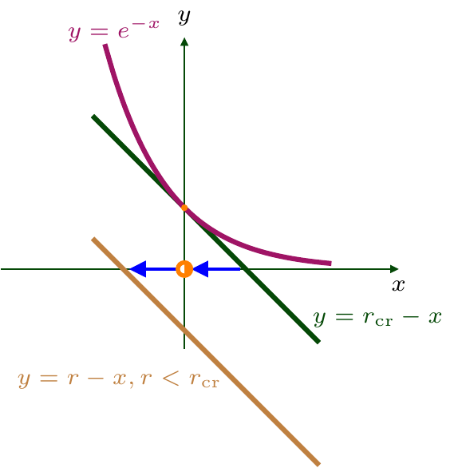
4.10 Conditions for the saddle-node bifurcation
One can ask ourselves, why does the dynamical systems \(x'=x^2+r\) and \(x'=r-x-e^{-x}\) have the same variety of phase portraits. The answer is thew following: consider the second dynamical system in the neighbourhood of \(x=0\), by Taylor’s expansion: \[ \begin{aligned} x'&=r-x-e^{-x}=r-x-\Bigl(1-x+\frac{x^2}{2}+\ldots\Bigr)\\ &=(r-1)-\frac{x^2}{2}+\ldots. \end{aligned} \] Hence, for \(x\) near \(0\), the solutions to \(x'=r-x-e^{-x}\) behave like solutions to \(y'=r_1-y^2\) up to certain rescaling (see e.g. Remark 3.24).
More generally, to have the saddle-node bifurcation for \(x'=f(x,r)\) at some \(r=r_{\mathrm{cr}}\) one needs e.g. the following phase diagram
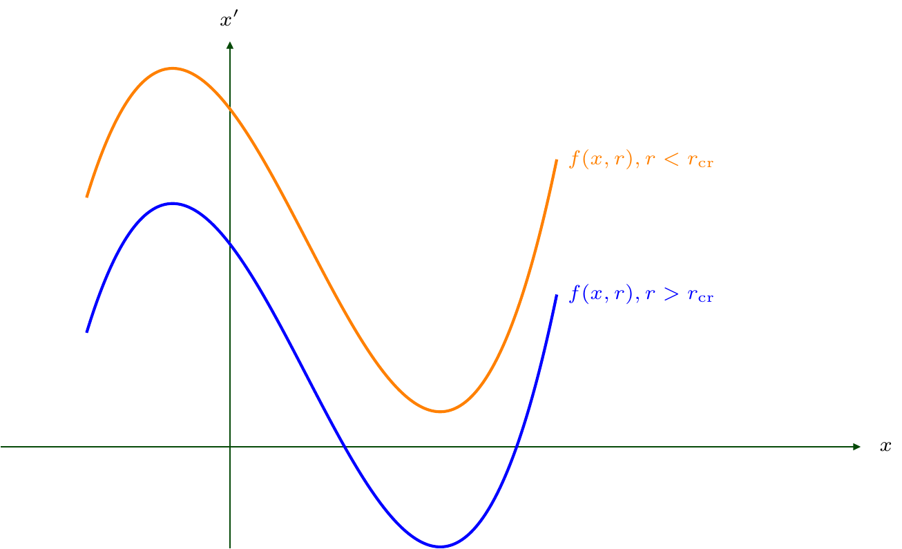
(Note: the diagram might be flipped and the signs between \(r\) and \(r_{\mathrm{cr}}\) might be reverted.)
By the continuity arguments, for \(r=r_{\mathrm{cr}}\), the graph of \(y=f(x,r)\) should have \(y=0\) as the tangent line. Let \(x=x_*\) be the tangent point Consider Taylor’s expansion for \(f(x,r)\) at the neighbourhood of \(x=x_*\) and \(r=r_{\mathrm{cr}}\):
\[ \begin{aligned} x'&=f(x,r)=f(x_*,r_{\mathrm{cr}})\\ & \quad+ (x-x_*) \frac{\partial f}{\partial x}(x_*,r_{\mathrm{cr}}) + (r-r_{\mathrm{cr}}) \frac{\partial f}{\partial r}(x_*,r_{\mathrm{cr}})\notag\\ &\quad +\frac{1}{2}(x-x_*)^2\frac{\partial^2 f}{\partial x^2}(x_*,r_{\mathrm{cr}})\notag\\ &\quad +(x-x_*)(r-r_{\mathrm{cr}})\frac{\partial^2 f}{\partial x\partial r}(x_*,r_{\mathrm{cr}}) \\&\quad +\frac{1}{2}(r-r_{\mathrm{cr}})^2\frac{\partial^2 f}{\partial r^2}(x_*,r_{\mathrm{cr}})+\ldots \qquad \qquad {\color{RedViolet}(*)} \end{aligned} \]
If the graph of \(y=f(x,r_{\mathrm{cr}})\) touches \(y=0\) at \(x=x_*\), then both the value and the gradient of \(f(x,r_{\mathrm{cr}})\) are equal to \(0\) at \(x=x_*\), i.e.
\[ \begin{aligned} f(x_*,r_{\mathrm{cr}})&=0,\\ \frac{\partial f}{\partial x}(x_*,r_{\mathrm{cr}}) &= 0. \end{aligned} \tag{4.2}\]
Therefore, for the saddle-node bifurcation the system behaves near the bifurcation point \(r=r_{\mathrm{cr}}\) approximately as follows:
\[ \begin{aligned} x'&\approx (r-r_{\mathrm{cr}}) \frac{\partial f}{\partial r}(x_*,r_{\mathrm{cr}}) +\frac{1}{2}(x-x_*)^2\frac{\partial^2 f}{\partial x^2}(x_*,r_{\mathrm{cr}}) \\&= a(r-r_{\mathrm{cr}})+b(x-x_*)^2, \end{aligned} \] that corresponds to the model equaiton we considered in Example 4.4, provided that
\[ \begin{aligned} \frac{\partial f}{\partial r}(x_*,r_{\mathrm{cr}}) &\neq0, \\ \frac{\partial^2 f}{\partial x^2}(x_*,r_{\mathrm{cr}})&\neq 0. \end{aligned} \tag{4.3}\]
Together, (4.2) and (4.3) provide, respectively, necessary and sufficient conditions to have a saddle-node bifurcation.
4.11 Definition
Let \(x'=f(x,r)\) where \(f\) is a smooth function of two variables. Let (4.2) and (4.3) hold. The dynamical system
\[ x'= a(r-r_{\mathrm{cr}})+b(x-x_*)^2, \tag{4.4}\]
where \(a:=\frac{\partial f}{\partial r}(x_*,r_{\mathrm{cr}})\neq0\), \(b:= \frac{1}{2}\frac{\partial^2 f}{\partial x^2}(x_*,r_{\mathrm{cr}})\neq0\) is called the normal form of \(x'=f(x,r)\) in the case of the saddle-node bifurcation.
4.12 Remark
Bifurcation diagrams for the case of a saddle-node bifurcation look similarly, because of the normal form (4.4), they differ only by the forms of the curves \(x=x(r)\) of fixed points which solves \(f(x,r)=0\) and also because they may flipped vertically or horizontally depending on signs of \(a\) and \(b\).
For example, the bifurcation diagram for the considered above dynamical system \(x'=r-x-e^{-x}\) is as follows (compare it with the bifurcation diagram for \(x'=r+x^2\) above):
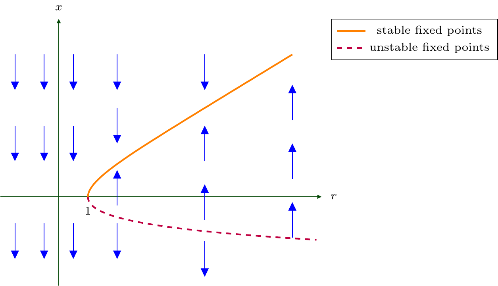
Note that here the curves \(x=x(r)\) here are determined by the equality \(r-x=e^{-x}\) and can not be expressed in elementary functions, but the fact that they are uniquely determined and also are monotone follow from out previous graphical analysis for Example 4.9.
4.13 Remark
By a bifurcation diagram, one can reconstruct space-time diagrams, at least qualitatively. For example, the bifurcation diagram described in Remark 4.12 tells us that, for \(r<1\), \(x=x(t)\) decreases regardless of \(x(0)\), whereas, for \(r>0\), \(x(t)\) will, for example, monotonically converge to certain finite value (a point on the orange curve) if only \(x(0)\) is larger then certain negative value (a point on the purple curve). In particular, \(r>1\) and \(x(0)\geq0\) imply together that \[ \lim_{t\to\infty}x(t)<\infty. \] (Sketch the corresponding space-time diagrams by yourself!)
4.14 Definition: Transcritical bifurcation
For a dynamical system \(x'=f(x,r)\), a (local) transcritical bifurcation takes place for a critical value of the parameter \(r=r_{\mathrm{cr}}\) if the dynamical system has two fixed points for all of values of \(r\) around \(r_{\mathrm{cr}}\), but they swap their stability types when \(r\) passes through \(r_{\mathrm{cr}}\). (The distance between the fixed point converge to \(0\) a \(r\to t_{\mathrm{cr}}\).)
4.15 Example
Consider \(x'=rx-x^2\). Since \(rx-x^2=0\) yields \(x(r-x)=0\), the system has two fixed points \(x=0\) and \(x=r\). The phase portraits however are different for \(r<0\), \(r=0\), and \(r>0\):
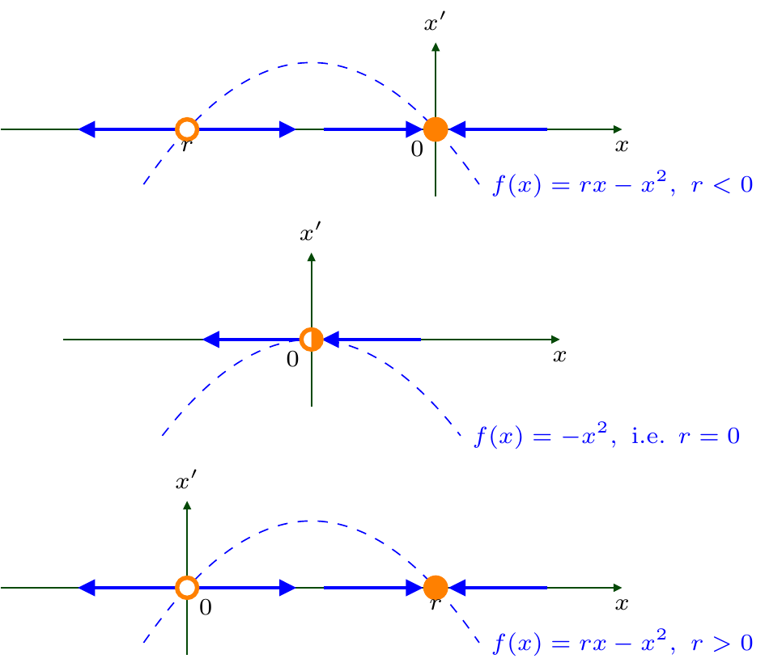
Namely,
for \(r>0\), \(x=0\) is an unstable fixed point and \(x=r\) is a stable fixed point;
for \(r=0\), \(x=0\) is a half-stable fixed point;
for \(r<0\), \(x=0\) becomes a stable fixed point and \(x=r\) is an unstable fixed point.
We can hence draw the bifurcation diagram on the plane \((x,r)\): the line \(x=r\) is stable for \(r>0\) and unstable for \(r<0\), whereas the line \(x=0\) is stable for \(r<0\) and unstable for \(r>0\):
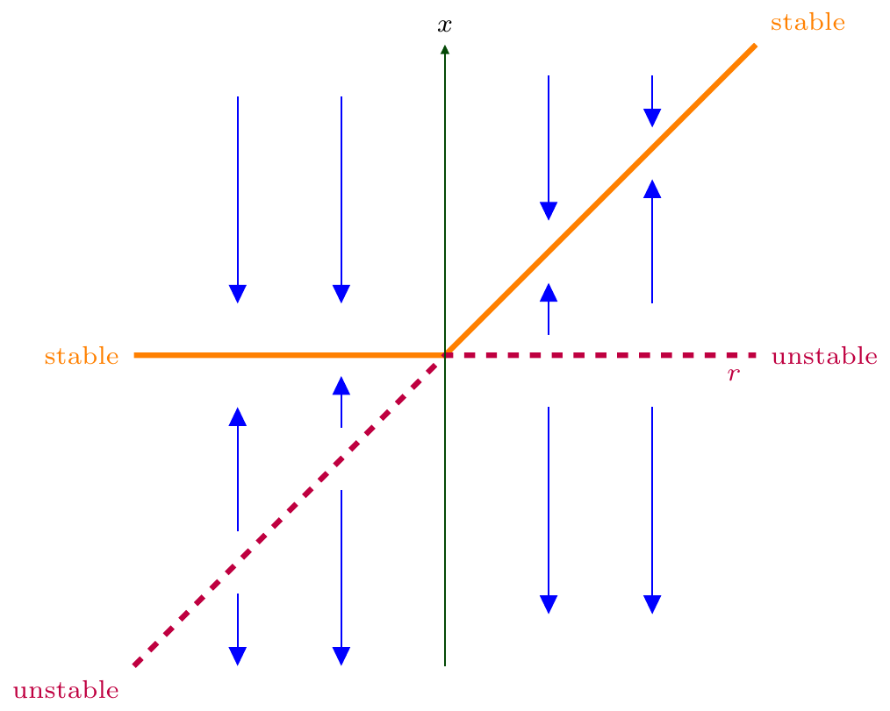
4.16 Example
Consider the dynamical system
\[ x'=x(1-x^2)-a(1-e^{-bx}), \qquad a,b\in{\mathbb{R}}. \]
Denote the right hand side by \(f_{a,b}(x)\). We see that \(x=0\) is a fixed point, as \(f_{a,b}(0)=0\) for all \(a,b\). Consider the Taylor expansion of \(f_{a,b}(x)\) in \(x\) for small values of \(x\).
We have \[ \begin{aligned} x'&=x(1-x^2)-a(1-e^{-bx})\\&=x+o(x^2)-a\Bigl(bx-\frac12 b^2 x^2+o(x^2)\Bigr), \end{aligned} \] where, recall, \(\lim\limits_{x\to 0}\frac{o(x^2)}{x^2}=0\); in particular, \(x^3=o(x^2)\) when \(x\to0\). Therefore, \[ x'=(1-ab)x+\frac{ab^2}{2}x^2+o(x^2). \] As a result, for \(x\) near the fixed point \(x_*=0\), \(x=x(t)\) behaves like the solution to
\[ {x'=(1-ab)x+\frac{ab^2}{2}x^2} \tag{4.5}\]
and hence the transcritical bifurcation occurs when \(ab=1\). Stress that the bifurcation occurs not for a particular values of parameters \(a,b\), but for all pairs \((a,b)\) which lie on the bifurcation curve \(ab=1\) on the plane \((a,b)\) (here there actually two curves, hyperbolas, \(b=\frac{1}{a}\)).
The second (non-zero) fixed point for (4.5) exists hence for \(ab\neq 1\) as, otherwise, two fixed points coincide and we have the half-stable fixed point at \(0\) only).
Hence, for \(ab\neq 1\), the second (non-zero) fixed point of (4.5) satisfies the equation \(1-ab+\frac{ab^2}{2}x=0\), i.e.
\[ x_*=\frac{2(ab-1)}{ab^2}. \tag{4.6}\]
To determine the stability depending on \(a,b\), it is easier to use the linear stability analysis (to do not consider various signs of \(a\) and \(b\)). Stress that the result should be the same for the original function \(f_{a,b}(x)\) and for “approximate” function \(\tilde{f}_{a,b}(x):=(1-ab)x+\frac{ab^2}{2}x^2\), namely, \[ \begin{aligned} f'_{a,b}(x)&=1-3x^2-ab e^{-bx}; && f'_{a,b}(0) & =1-ab;\\ \tilde{f}'_{a,b}(x)&=1-ab+ab^2x^2; && \tilde{f}'_{a,b}(0) & =1-ab. \end{aligned} \]
Therefore, for \(ab>1\), \(x=0\) is a stable fixed point and hence (4.6) is an unstable fixed point, whereas for \(ab<1\), \(x=0\) is an unstable fixed point and (4.6) is a stable fixed point.
Since our previous considerations worked for small values of \(x\) only, we require that (4.6) is a small number, i.e. that \(ab\) is close to \(1\). More detailed graphical analysis for the function \(f_{a,b}(x)\) would allow to receive the same result without that restriction.
4.17 Definition
Let \(x'=f(x,r)\) where \(f\) is a smooth function of two variables. Let (4.2) hold, i.e. \(f(x_*,r_{\mathrm{cr}})=\frac{\partial f}{\partial x}(x_*,r_{\mathrm{cr}})=0\). Let also (see formula (\(*\)) in item 4.10 above)
\[ {\begin{aligned} \frac{\partial f}{\partial r}(x_*,r_{\mathrm{cr}})&=0,\\ a:=\frac{\partial^2 f}{\partial x\partial r}(x_*,r_{\mathrm{cr}})&\neq0,\\ b:=\frac{1}{2}\frac{\partial^2 f}{\partial x^2}(x_*,r_{\mathrm{cr}})&\neq0. \end{aligned}} \]
Then the dynamical system
\[ {x'= a(r-r_{\mathrm{cr}})(x-x_*)+b(x-x_*)^2,} \]
is called the normal form of \(x'=f(x,r)\) in the case of the transcritical bifurcation.
4.18 Definition
For a dynamical system \(x'=f(x,r)\), a (local) pitchfork bifurcation takes place for a critical value of the parameter \(r=r_{\mathrm{cr}}\) if the number of fixed points changes from \(1\) to \(3\) when \(r\) passes through \(r_{\mathrm{cr}}\). (The distances between fixed points converge to \(0\) as \(r\to r_{\mathrm{cr}}\).)
More precisely, if, for $r<r_{} $ there are three fixed points: two unstable and one stable, and, if, for \(r>r_{\mathrm{cr}}\) two unstable ones disappear and the stable one becomes unstable (and the unique), it is called a subcritical pitchfork bifurcation (as three fixed points exist before the critical value \(r_{\mathrm{cr}}\)).
On contrary, if, for \(r<r_{\mathrm{cr}}\) there is a unique stable fixed point and it becomes an unstable one when \(r>r_{\mathrm{cr}}\) and also two new stable fixed points appear, then it is called a supercritical pitchfork bifurcation (as it takes place after the critical value \(r_{\mathrm{cr}}\)).
4.19 Example
Consider \(x'=rx-x^3:=f(x)\). Since \(f(x)=x(r-x^2)\), we conclude that, for \(r<0\), there is a unique fixed point: \(x=0\), and since \(f'(x)=r-3x^2\), one has \(f'(0)=r<0\), i.e. \(x=0\) is a stable fixed point. However, for \(r>0\), there are three fixed points: \(x=0\) and \(x=\pm\sqrt{r}\), and \[ f'(0)=r>0, \quad f'(\pm\sqrt{r})=r-3r=-2r<0, \] thus \(x=0\) is an unstable fixed point and \(x=\pm\sqrt{r}\) are stable fixed points.
Therefore, a supercritical pitchfork bifurcation occurs for this dynamical system with the bifurcation point at \(r=0\). Consider also how the phase portraits change.
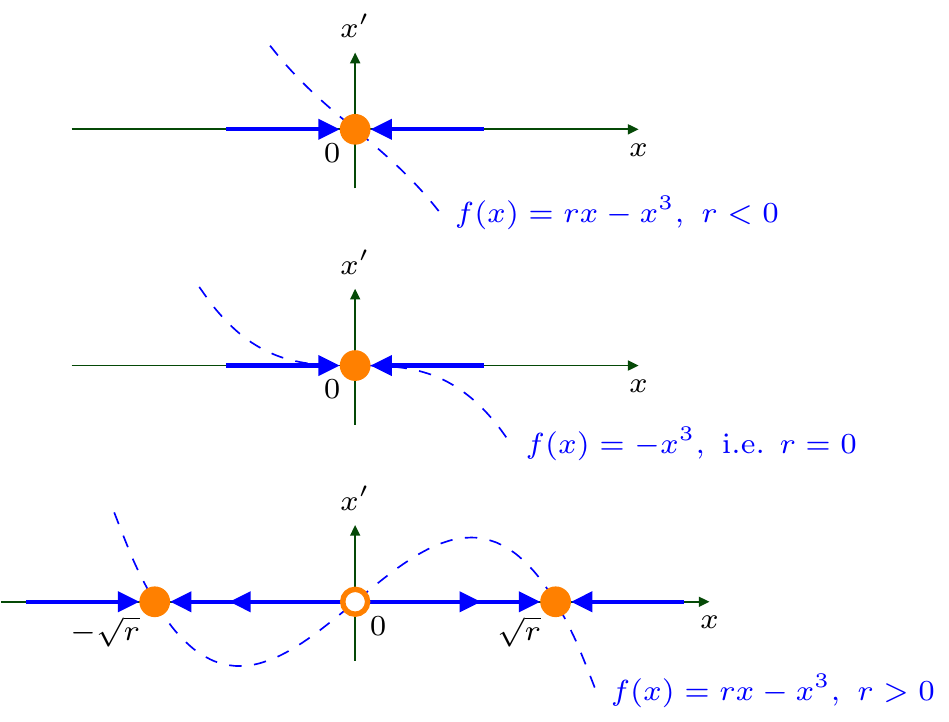
The bifurcation diagram is hence as follows:
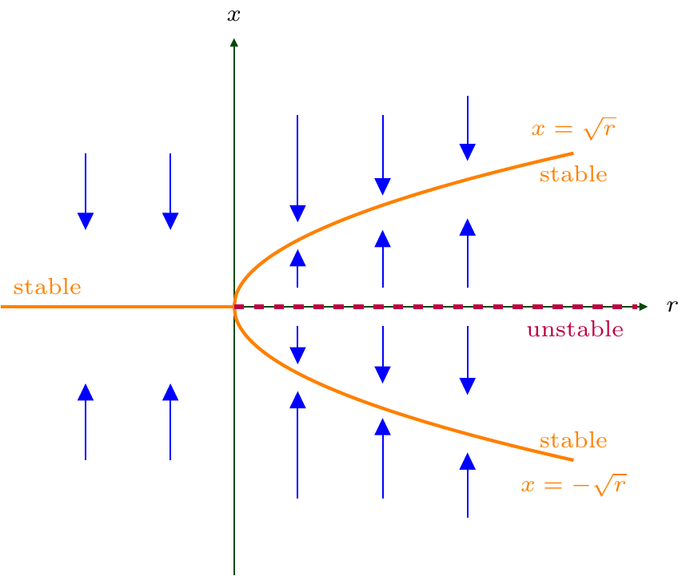
4.20 Remark
The phase portraits for \(r<0\) and for \(r=0\) are the same. However, for small \(x\), we have that \(x'\approx rx\) (as \(x^3=o(x)\)) and \(x(t)\approx x(0)e^{rt}\to0\) for \(r<0\) exponentially fast as \(t\to\infty\). In contrast, \(x'=-x^3\) implies \(x(t)=\frac{x(0)}{\sqrt{1+2x(0)^2 t}}\to 0\) as \(t\to\infty\), but much slower.
4.21 Remark
The model example for the subcritical pitchfork bifurcation is \(x'=rx{\color{RedViolet}+}x^3\). Sketch the different phase portraits for \(r<0\), \(r=0\), \(r>0\) by yourself! The “pitchfork” on the corresponding bifurcation diagram is then “flipped”:
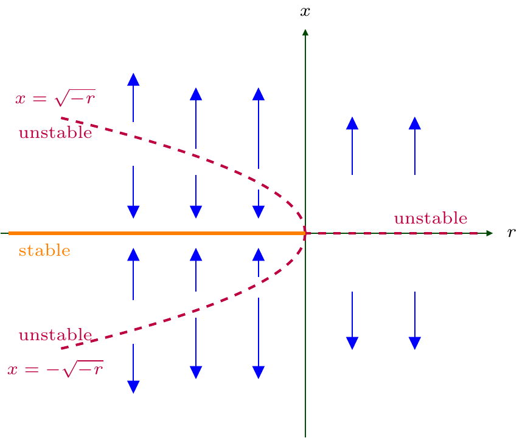
4.22 Example
Consider the dynamical system
\[ x'=r x -\frac{x^3}{1+x^4}=:f(x), \quad r\in{\mathbb{R}}. \tag{4.7}\]
Clearly, \(x=0\) is a fixed point. Expanding the right-hand side in Taylor’s series for small \(x\), one gets \[ x'=rx -x^3(1-x^4+x^8+\ldots)\approx rx-x^3, \] hence the the supercritical pitchfork bifurcation occurs with the bifurcation point at \(r_{\mathrm{cr}}=0\) and the fixed point at \(x_*=0\).
However, the right-hand side of (4.7) is also equal to zero if
\[ r=\frac{x^2}{1+x^4} \tag{4.8}\]
This implies that \(r\geq0\). The case \(r=0\) leads to \(x=0\), and it was considered before (but we will return to it below). For \(r>0\), we have \[ r x^4-x^2+r=0, \qquad x^2=\frac{1\pm\sqrt{1-4r^2}}{2r}. \]
Since \(r>0\) and \(1-4r^2\leq1\), one gets that non-zero fixed points exist if and only if
\[ {0<r\leq \frac12}. \]
Each such \(r\) provides four fixed points except \(r=\frac12\) that implies \(x^2=1\), i.e. \(x=\pm1\). However, to get the stability type, one needs some long computations.
It may be easier done graphically directly on the bifurcation diagram. Since (4.8) provides dependence \(r\) on \(x\), we revert the order of axes on the bifurcation diagram. We have \[ f(x)=x\bigl(r-g(x)\bigr), \qquad g(x):=\frac{x^2}{1+x^4}\geq0. \]
To sketch the graph of \(r=g(x)\), we note that \[ \begin{gathered} g(x)=0 \Leftrightarrow x=0; \qquad \lim_{x\to\pm\infty}g(x)=0;\\ g'(x)=\frac{2 (1-x) x (x+1)(x^2+1)}{(1+x^4)^2}. \end{gathered} \] Therefore, \(x=0\) is the point of local minimum for \(g(x)\) and \(x=\pm1\) are points of local maximum with \(g(\pm1)=\frac12\).
Sketch now the graph of \(r=g(x)\) on the bifurcation diagram (note that the scales are different for \(x\) and \(r\) axes). Then, one can get the signs of \(f(x)=x(r-g(x))\) (and hence the directions of arrows, note that they are horizontal now):
for \(x>0\), \(f(x)>0\) if \(r>g(x)\) and \(f(x)<0\) if \(r<g(x)\);
for \(x<0\), \(f(x)>0\) if \(r<g(x)\) and \(f(x)<0\) if \(r>g(x)\).
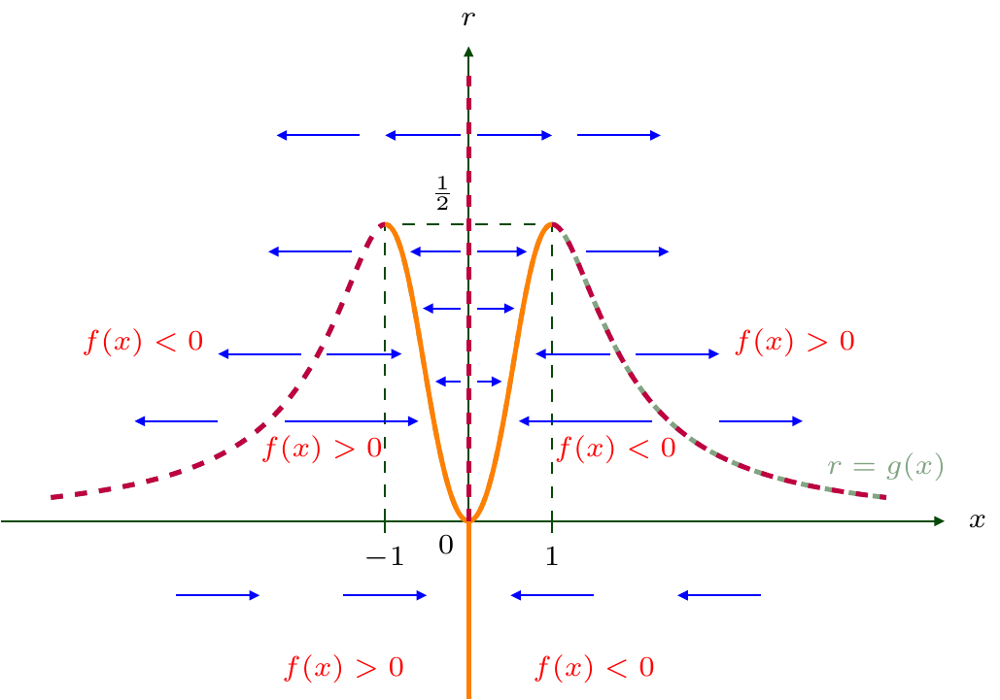
Recall that \(x=0\) is always a fixed point, as \(f(x)=x(r-g(x))\). We see, now, graphically, that for \(r>\frac12\) or \(r<0\) there no other fixed points. The line \(r=\frac12\) is tangent to the curve \(r=g(x)\), hence at \(r=\frac12\) saddle-node bifurcations occur for both appearing (half-stable) fixed points \(x=1\) and \(x=-1\).
They are saddle-node, since as soon as \(r<\frac12\), each fixed point is “split” by two: stable and unstable. Stress that the line \(r=0\) is also tangent to the graph of \(r=g(x)\) at \(x=0\), however, here the bifurcation is not saddle-node, as \(x=0\) has additional “multiplicity” as a fixed point for \(f(x)=x(r-g(x))\), and it has a pitchfork bifurcation around \(x=0\), that we have shown before.
4.23 Remark
The value \(r=0\) in the previous example shows the difference between the so-called local and global bifurcations. Namely, the analysis we provided for small \(x\) which uses the Taylor expansion, shows the local bifurcation (supercritical pitchfork) around \(x=0\). It stated that for \(r>0\) two additional fixed points appeared around \(0\). However, the global phase portrait visible from the bifurcation diagram shows that for \(r<0\) there are indeed no fixed points for (4.7), but as soon as \(r>0\), appeared five fixed points: \(x=0\) and four solutions of \(g(x)=r\). Note that, for small \(r>0\), two solutions have very large absolute values (and hence remained invisible for the local analysis).